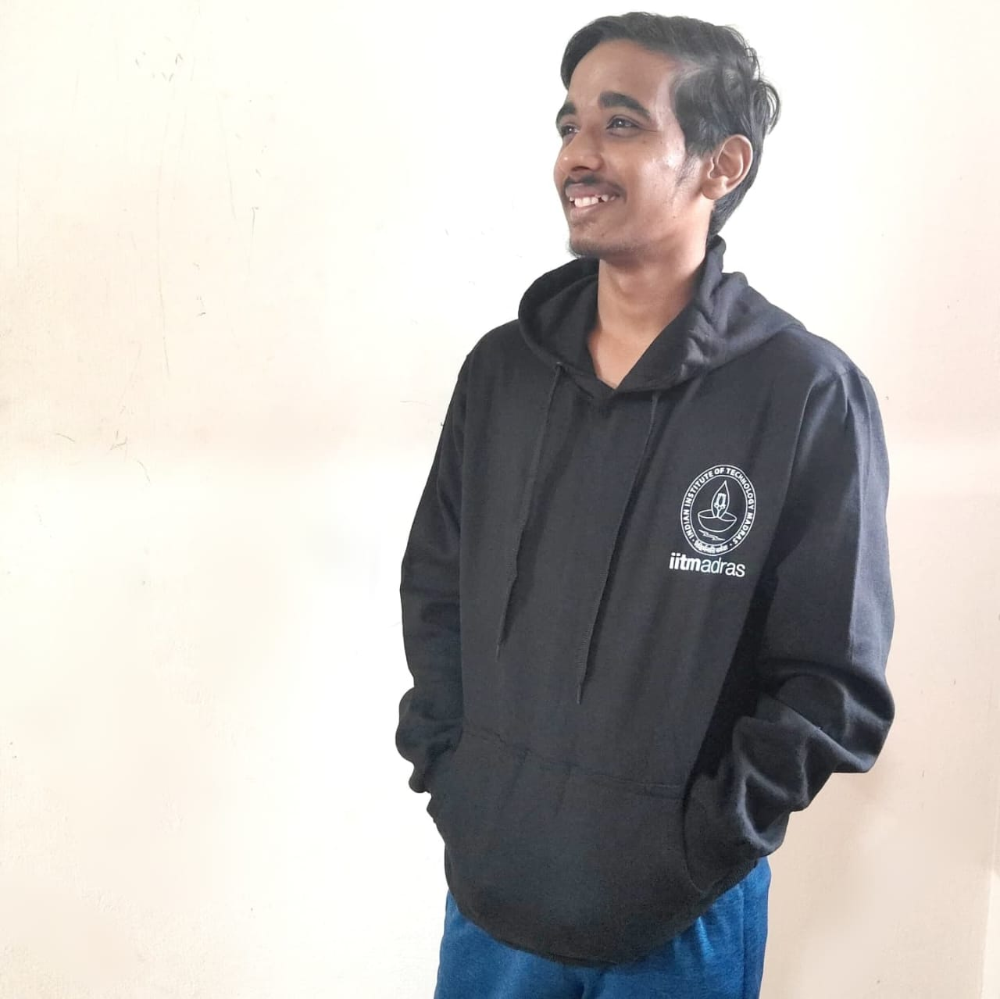

Student • Author • Entrepreneur
I am a student at the Indian Institute of Technology, Madras, where I balance rigorous academics with hands-on entrepreneurial experience. My journey is defined by curiosity, initiative, and the drive to build solutions that create real-world impact.
I am the founder of SoApp, a retail technology startup focused on transforming retail experiences through innovation. With SoApp, I am working on developing smarter, more seamless shopping solutions that integrate technology directly into everyday retail interactions. From conceptualization to early prototypes, I have been leading every stage of the journey, ideation, product design, technology development, and market validation.
Alongside entrepreneurship, I explore writing as a medium of impact. I am the author of "What to Do in Your Teenage", a book that guides young people through their formative years with insights on growth, decision-making, and responsibility. Writing has given me the platform to share experiences and perspectives that inspire others while sharpening my ability to communicate clearly and persuasively.
At the intersection of technology, entrepreneurship, and writing, I aim to keep creating meaningful projects that bring ideas to life and solve problems that matter.

SoApp is redefining the way people shop by creating smart, seamless, and lightning-fast retail experiences. With advanced technology at its core, it eliminates long queues, automates billing, and ensures every customer receives personalized recommendations tailored to their preferences. Beyond convenience, SoApp enhances the entire shopping journey, making it not just faster but smarter and more enjoyable.
“What to Do in Your Teenage” is a comprehensive guide that inspires young people to make the most of their formative years. It offers practical advice and actionable insights to help teenagers build confidence, develop initiative, and seize opportunities that can shape their future. The book encourages exploration, creativity, and self-discovery, guiding readers through challenges and personal growth.
soumya-ranjan@so-app.tech